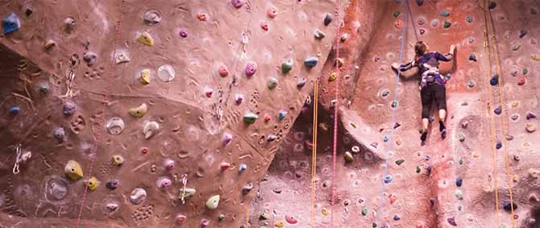

Important Information
Membership
To become a member of the Coventry University Mountaineering Society, we charge £30 a year. This covers your BMC (British Mountaineering Council) membership, including insurance, and insurance with the Students Union. It will also allow you to use any of the clubs equipment whenever you need it. You must become a member before we can take you on any trips at all.
Sessions at Warwick
Every Wednesday afternoon at 13:30, we go climbing at the sports centre at Warwick University. This allows us to climb very regularly, with bouldering also available. To get to the wall, we use the bus service, which charge £4 for a return journey, this must be brought in exact change to comply with the bus's payment system. Once at the wall, you can choose to either pay for a membership there, or pay on one-off sessions. For students, these one-off sessions are £5.50 - but subject to change regularly. You can also hire rock shoes there, and the club provide harness's. Climbing here is not limited to Wednesday, and many members like to go more frequently throughout the week, so there is often somebody there.
Ballroom Bouldering
There is now the opportunity to boulder at the newly opened Ballroom bouldering centre in Coventry. Find out more here
Trips
We run trips all over the country, and some abroad. These trips usually have a fixed price of £30 for club members, the exception being for day trips, or trips involving qualifications, or trips longer than a weekend, which can often cost more.
- Peak District - Taster Sessions14th - 15th October
- YMC Hut Coniston - Lake District 27th - 29th October
- Cerberus Hut - Somerset 17th - 19th November
- GMC Hut - North Wales 1st - 3rd December
- Cae'r Fran - North Wales 2nd - 4th February
- Carlswark Cottage - Peak District 9th - 12th February
- Mynydd Hut - North Wales 16th - 18th February
- YSS Hut - Yorkshire 2nd - 4th March
- Newlands valley - Lake District 16th - 18th March
- Don Whillans Hut - Peak District 30th March - 1st April
- Tranearth - Lake District 25th - 28th May